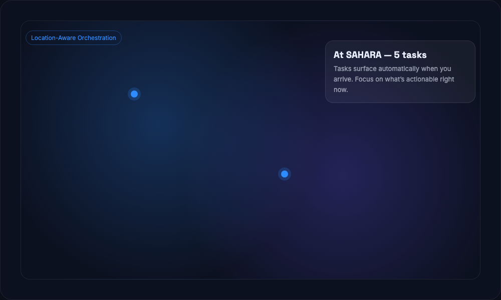

Context automatically surfaces the right tasks based on where you are and what’s actionable. No more scrolling through everything — just what matters, now.
Create locations and tie tasks to them. When you arrive, Context brings those tasks to the top.
See upcoming tasks for the next stop before you arrive, so you can plan ahead.
Critical tasks can override location filters when deadlines matter.
You shouldn’t need to think about what to do next. Context uses location as a signal to remove noise and keep you focused.